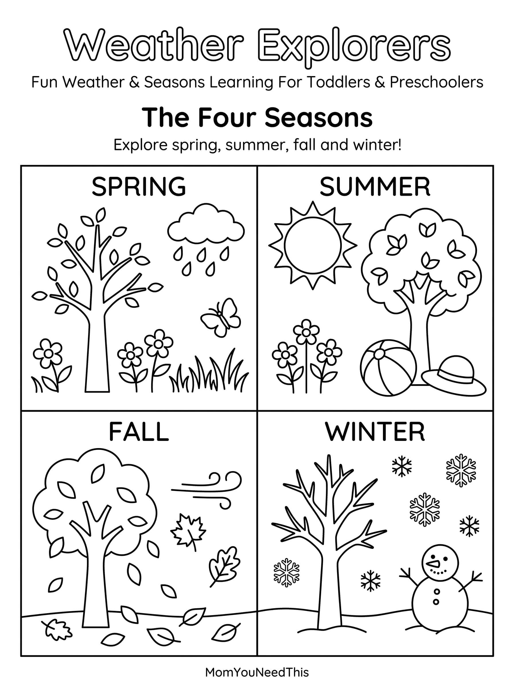

Weather & Seasons Free Printable Weather & Seasons Worksheet For Kids
Help toddlers and preschoolers learn about different types of weather and the four seasons with this fun, kid-friendly printable. Use it at home, during preschool activities, or as part of a weather-themed learning lesson.
☀️ Explore Weather & Seasons
Use the worksheet to help your child recognize different types of weather, learn about the four seasons, and talk about what they see outside every day.
Free Weather & Seasons Worksheet


How To Use This Printable
Talk about the weather with your child and ask questions about what they see outside. You can discuss whether it is sunny, rainy, snowy, or cloudy and talk about which season it is. Use the worksheet for preschool lessons, matching activities, or quiet learning time.
Why Learn About Weather & Seasons?
Learning about weather and seasons helps children understand changes in the world around them. It also builds vocabulary, observation skills, and early science knowledge through everyday experiences.
🎁 Keep Exploring Free Learning Activities
Discover more printable activities, toddler resources, and learning ideas created for busy parents.
🎁 View All Free Resources